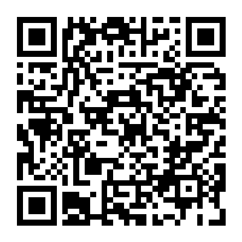

你的 NETI 人格类型是
核心人设画像
对应技术科普
最适合的搭档
亲爱的能源同行者——
无论你测出来是"稳如泰山"还是"核聚变梦想家"，请记住：这16种人格没有优劣之分，就像电网里没有"谁比谁更重要"。
储能的人不焦虑——因为他们在低谷时积蓄势能，相信总有一天会升上去。
发电的人不胆怯——因为他们生来就是要发光的，哪怕今天没有风、没有光。
你不需要成为所有人，你只需要成为最适合电网的那个"节点"。你的"电压"可能忽高忽低，你的"频率"可能偶尔跑偏，但没关系——
只要还在运转，你就已经为这个世界贡献了能量。
愿你的能量，流向它该去的地方。
—— NEA全体成员 敬上
直接扫描下方二维码或前往微信公众号"CUHKSZ新能源学会"，观看"AI与能源的交汇：吴辰晔教授专访-第二弹"后正确回答以下问题，即可解锁16人格全图鉴~

1. 在讨论小尺度（如单个电动汽车）电池充放电策略优化时，我们主要关注的是：
2. 关于屋顶光伏+储能系统帮助用户省钱甚至赚钱，访谈中提到的具体AI应用方式是：
3. 在谈到AI赋能的绿色未来对普通人生活的影响时，吴教授认为最有可能出现的改变是什么？